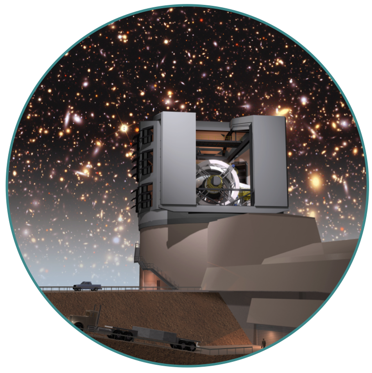

Time-Domain Needles in Rubin's Haystack
Harvard Center for Astrophysics, Cambridge, MA | April 17-19, 2024
Plenary talk recordings are available on the Program page.
About
Registration
Program
Hack Projects
Virtual Posters
Getting Around